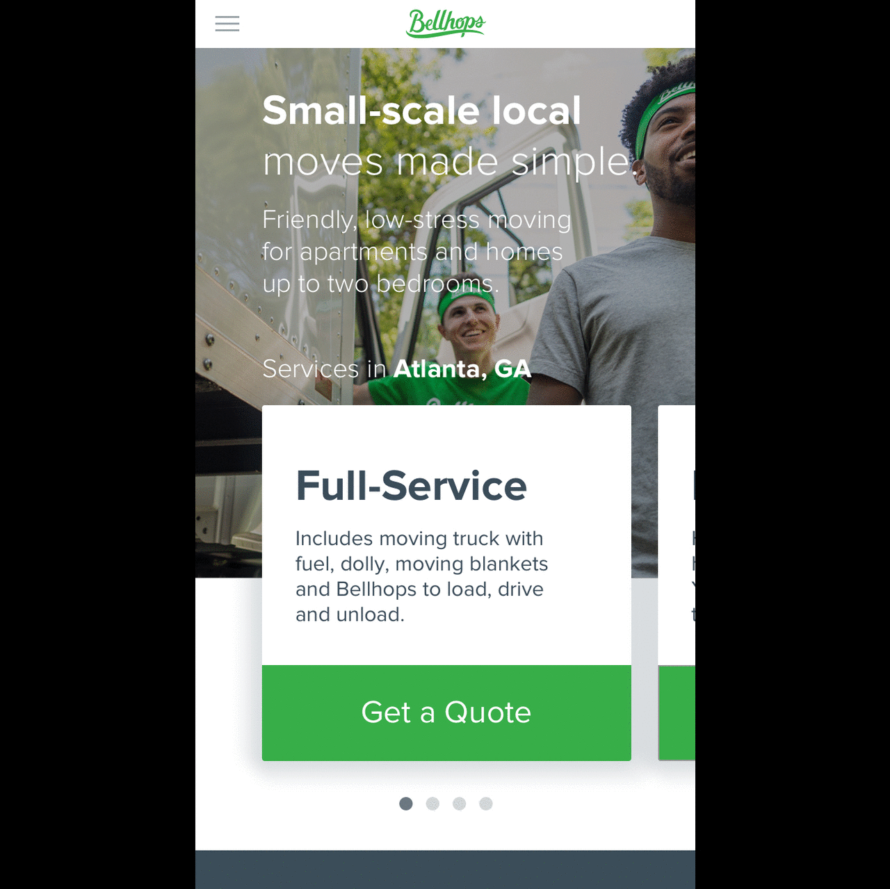
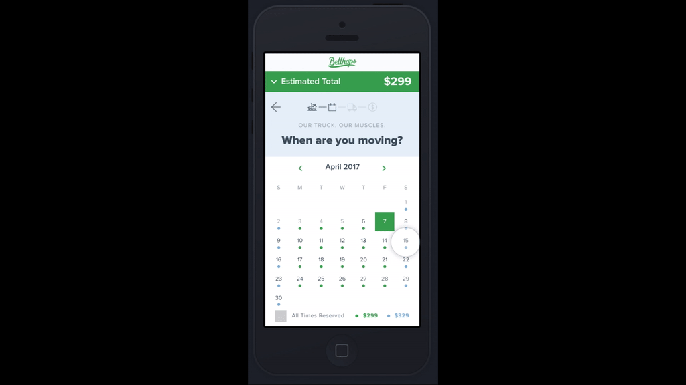
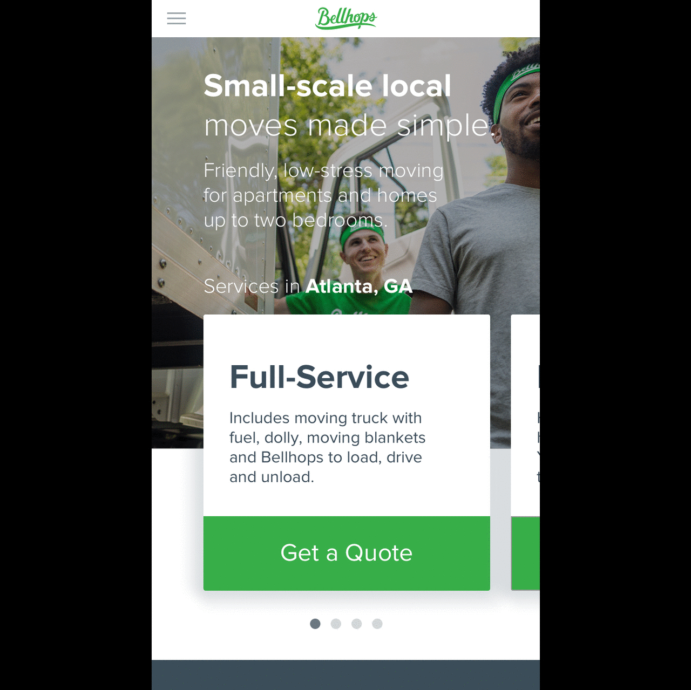
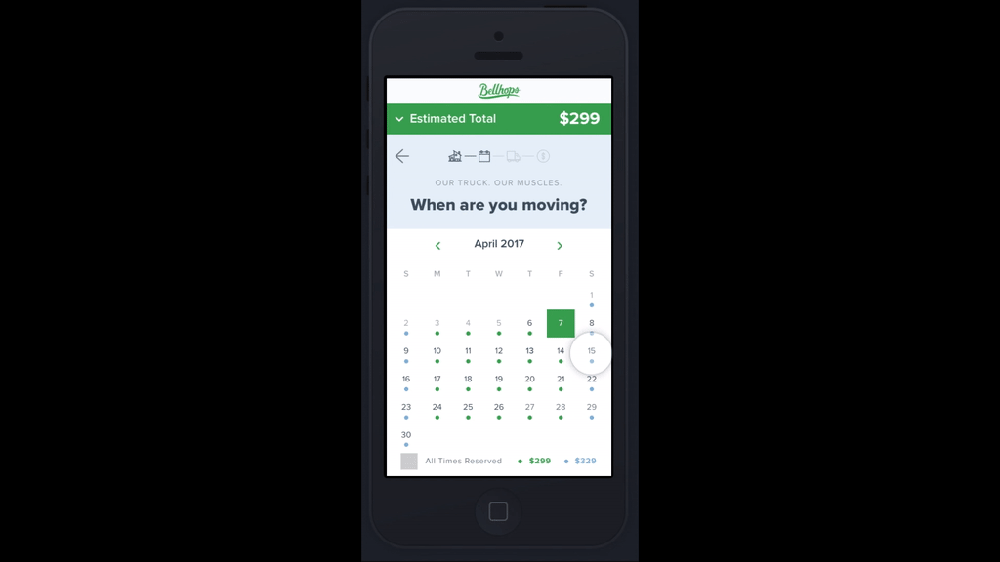
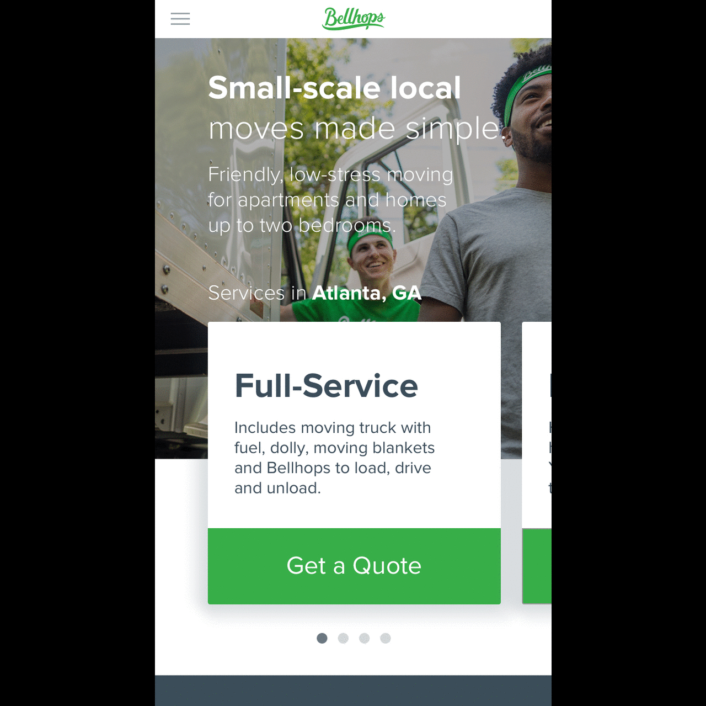
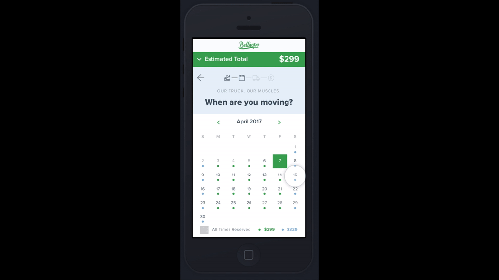
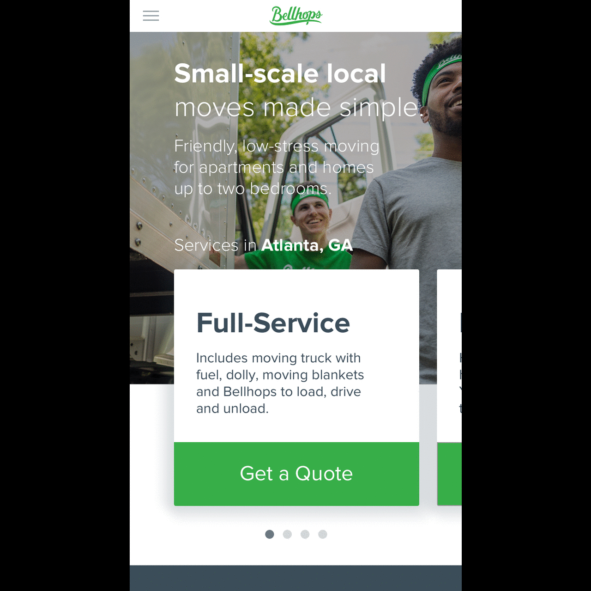
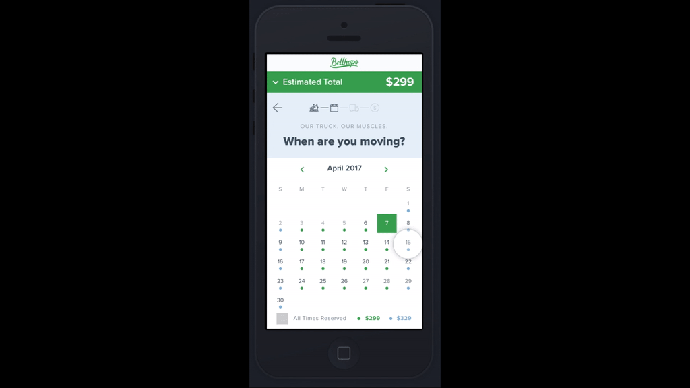

 



I started at Bellhops in June of 2017 as a rotating product management intern meaning that over the course of my internship I would be working on internal tools, the customer facing website and order flow, and the workforce field app.
Within my first couple of weeks I had completed a competitive analysis (even going to meet with a competitor in Athens, GA) and given a company wide presentation. Soon I was embedding with internal operations teams and interviewing them to learn how they optimize their workflows and to find inefficiencies with existing tools. I conceived, designed, spec’d, and wrote user stories for a tool called Bogota which would allow teams to see when Bellhops were available and assign them to jobs, solving the problem of not knowing the lengths of time Bellhops were available. I also conceived, designed, spec’d, and wrote user stories for a tool that would track the history of an order that is currently being built, as there was no tooling in place to track what changed and who changed the details of an order, and any change that was logged was in Slack.
After my internal rotation I switched gears and worked on the customer facing website and order flow. Here I was responsible for designing use case presentation when a customer hovered over a service, as well as the screen a customer would see after clicking on a link in an abandoned cart email. After designing a few more screens that were launched into production I led the charge in investigating the Zillow API for use in backfilling data and to see if we could find any correlation between house size and length of moves, so that we could better predict how long a Bellhop would be on a job (and thereby be able to assign him to multiple).
As my internship wrapped up, I wrote a reflective and visionary document about Bellhops, titled Rushir’s Thoughts.
In August, I was back at Bellhops as an Associate Product Manager, conceiving, designing, and strategizing about selling moves as packages rather than making the customer figure out how many Bellhops for how many hours they would need. I called this project, Atlantis. I think by far this has been my favorite project because of the breadth, utility, and impact. It spanned from design and implementation procedures to business, pricing strategies, all the way to move day execution. It defined how we could sell our moves in a way that was from the ground up optimized for the customer, and how and why selling a move as a package to a customer makes more sense to them than selling in a way where they have to struggle to determine what they need. One of the things that was implemented from this project is what we call “swimlanes”. Swimlanes are how we set up everyday to make sure that we have open spots for moves with trucks, and a way to insure that if a move goes over its allotted duration, it doesn’t affect a move that comes after it. Atlantis gave me a chance to show how much I had learned over the course of the internship and allowed me the chance to take the business initiative of “sell more truck moves” all the way through the process. It was even set up as a test (outlined in the linked document) so that we wouldn’t lose existing customers and potentially gain new customers who never intended to purchase a truck.
Since Atlantis I’ve been conducting field research of our new pilot move program titled “Bins and Liners”, which allows customer to opt-in to us sending them large tarp bags so they don’t have to buy boxes. On move day, our Bellhops show up and simply place the tarp bag inside a plastic bin that can easily be stacked at the back of the truck, saving move duration which allows Bellhops to be ready for their next job, all while protecting the customer’s belongings. View Field Notes.
Recently I’ve been work on things ranging from CRO (from concept and strategy to hi-fidelity design) to testing entirely new order flows, and even designing features for the Bellhops field app. We recently launched “shifts”, an idea originating from the swimlanes in the Atlantis project, and I’ve been responsible for carrying out the design in the iOS and Android apps.
If you’d like to know more about my work at Bellhops, please reach out.